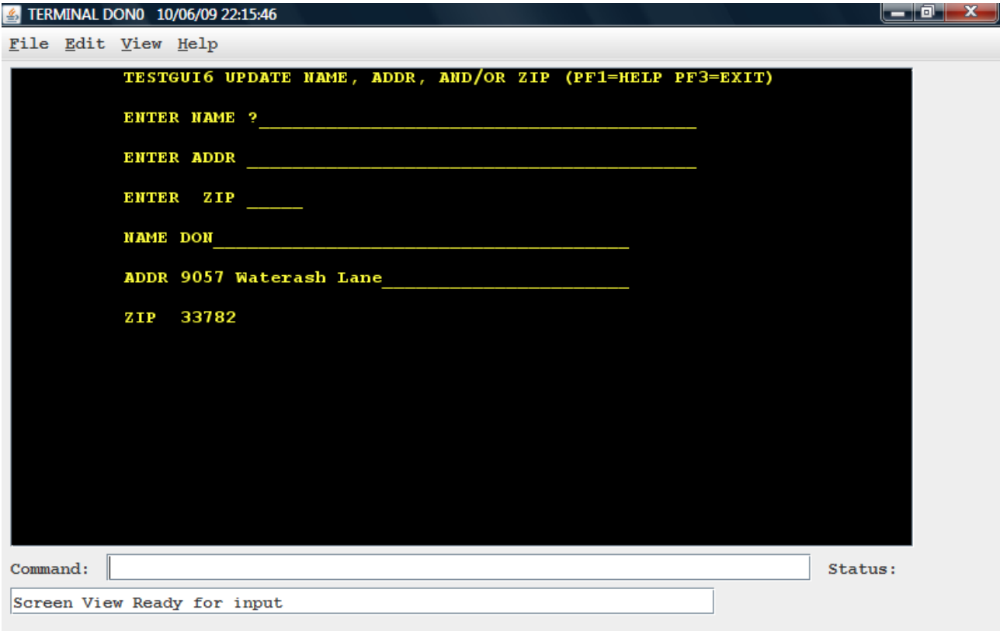
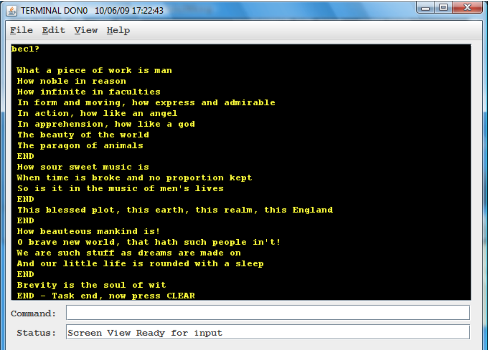

zPAR and zPARTRS
- zPAR - z390 and zCOBOL Program Analysis Reports
- zPARTRS - Source Execution Trace Utility
ZPAR - z390 and zcobol Program Analysis Reports ZPARTRS Source Execution Trace Utility
ZPARTRS - Trace Source COBOL, Assembler, and EXEC CICS Execution Report
ZPARTRS can be used to generate a z390 COBOL, Assembler, and EXEC CICS source code execution trace report from an existing z390 instruction execution TRE trace file and the associated program LST and PRN files.
zpar\ZPARTRS dir\pgm options - trace command for zcobol and z390 assembler dir\pgm - the name and optional directory path of the TRE execution trace file must be the first user parameter passed to ZPARTRS.BAT. The output trace file will be dir\pgm.TRS with trace and any error messages.
Options - up to 8 additional options separated by spaces can follow the dir\pgm parameter:
| Option | Description |
|---|---|
| ASM/NOASM | trace assembler program source statements (default is ASM). (Note this ZPARTRS option to turn ASM source tracing on or off is different from the z390 NOASM option specified in the ZPARTRS.OPT file to suppress assembly and only execute the conditional macro code in ZPARTRS.MLC.) |
| CBL/NOCBL | trace zcobol source program statements (default is CBL) |
| DETAIL/NODETAIL | include both the TRE instruction trace with operand values and the corresponding source assembler program instruction line with operand names and comments (the default is NODETAIL to only include the assembler source line with PSW and CC) |
| EXCLUDE(pgm1+pgm2+pgmn) | list of program modules to exclude from trace (examples include EXCLUDE(DISPLAY) to suppress tracing of the COBOL DISPLAY support module. Only the code to generate parameter list and call will be generated.) |
| INCLUDE(pgm1+pgm2+pgmn) | list of program modules to include in source trace (the default is to only include the first program loaded in the TRE trace if no INCLUDE parameter is included). |
| LOADLIB(path) | define optional path for all LST and PRN files. The default is to use the path in the TRE trace loads for LST files and use the LST include paths for PRN files. This is useful if you want to save a trace and associated source files seprate from normal execution environment. |
| NOMSG | exclude all messages such as WTO, TRACE and error messages (default is to include all messages from included source modules. The trace also shows single line .... with count of skipped instructions and messages). |
| NOTIME | exclude any time-stamps found in TRE file (default is to include them) |
Examples
Example EXEC CICS, COBOL, and Assembler source traces for the following:
DEMO.MLC - Assembler WTO "Hello World" demo program.
ASMLG demo\DEMO TRACEgenerates demo\DEMO.TRE trace file for assembler demo program with WTO 'Hello World'zpar\ZPARTRS demo\DEMO NOTIMEgenerate assembler source trace in demo\DEMO.TRS.zpar\ZPARTRS demo\DEMO DETAIL NOTIMEgenerate detail assembler trace including both the TRE instruction operand values and the assembler source lines in demo\DEMO.TRS.
HELLO.CBL - COBOL program with DISPLAY "Hello World".
CBLCLG zcobol\demo\HELLO TRACE(E)generates zcobol\demo\HELLO.TRE trace file.zpar\ZPARTRS zcobol\demo\HELLO NOTIME NOASMgenerate COBOL only source trace in zcobol\demo\HELLO.TRS.zpar\ZPARTRS zcobol\demo\HELLO NOTIMEgenerate COBOL and assembler source trace in zcobol\demo\HELLO.TRSzpar\ZPARTRC zcobol\demo\HELLO NOTIME DETAILgenerate COBOL and detail assembler trace with both TRE and assembler source in zcobol\demo\HELLO.TRS.
TESTGUI6.MLC - Assembler EXEC CICS transaction program with form to enter name, address, and zip.
cics\Z390CICGstarts zCICS session using local terminal with client side trace turned on in cics\Z390CICS.INI file.- The commands entered for the TESTGUI6 trace were
CLEAR,GUI6,don,tab,9057 Waterash, tab, 33782, enter, F3, clear, CEMT P SHUT.

ZPAR\ZPARTRS cics\DON0 INCLUDE(TESTGUI6) NOMSG NOTIME(command for trace of assembler EXEC CICS TESTGUI6.MLC assembler transaction source program lines executed during session. The assembler EXEC CICS source statements appear as ECA= type messages with line breaks.)ZPAR\ZPARTRS cics\DON0 INCLUDE(TESTGUI6) DETAIL NOMSG NOTIME(command for detail trace of assembler EXEC CICS TESTGUI6.MLC assembler transaction source program lines executed during session. The original TRE lines with operand hex values are followed by assembler source lines with labels and comments.
The assembler EXEC CICS source statements appear as ECA= type messages with line breaks.)ZPAR\ZPARTRS cics\DON0 INCLUDE(TESTGUI6) NOASM NOMSG NOTIME(command for trace of just the assembler EXEC CICS statements in TESTGUI6.MLC assembler transaction source program lines executed during session. Note the use of NOASM suppresses ASM instructions and only the EXEC CICS assembler statements are traced. The assembler EXEC CICS source statements appear as ECA= type messages with line breaks.)
TESTBEC1.CBL - EXEC CICS COBOL program to display lines of text at prompt.
The screen capture following execution of BEC1 transaction.

ZPAR\ZPARTRS cics\DON0 INCLUDE(TESTBEC1) NOASM NOMSG NOTIME- generate trace of COBOL source program lines executed during session.ZPAR\ZPARTRS cics\DON0 INCLUDE(TESTBEC1) NOMSG NOTIME- generate trace of COBOL and assembler source program lines executed during session.
ZPARTRS User Guide
The program zpar\ZPARTRS.MLC reads the linker listing LST file for every z390 load module executed in the trace via LINK, LOAD, or XCTL in order to find the PRN file for every included module in each load module.
If LOADLIB(path) is specified, all the LST and PRN files will be loaded from that directory otherwise the LST files will be loaded from path specified in the TRE trace for each LOAD svc, and the PRN files will be loaded from the path specified on the INCLUDE statements in each LST file.
If no INCLUDE option is specified, the first loaded program is the only program source traced. The source code for each statically linked PRN is loaded into memory and cross referenced to the PSW-ADDR corresponding to current load address using HLASM created macro variables which store source code by PSW address name.
Note the same source program may be loaded multiple times at different addresses during execution. The output source trace file is created with same path and name as TRE file but with suffix TRS.
If no corresponding PRN source line is found when generating all assembler, the original TRE instruction trace line with opcode and operands is generated instead as message. This can occur due to missing LST or PRN files or due to generation of instructions using DC hex values for multiple instructions, use of ORG to overlay instructions, etc.
Source assembler lines
- PSW-ADDR - instruction PSW trace address with high bit indicating 31 or 24 bit AMODE from TRE file
- PSW-CC - condition code at start of instruction from TRE file
- MODULE-NAME - source module name included in 390 load module (case sensitive)
- MOD-ADDR - relative module address from PRN listing
- LINE - source assembler line with comments
Source COBOL lines
- LINE # - line number of source statement
- MOD_NAME - source module name included in 390 load module (case sensitive)
- LINE - COBOL or EXEC CICS source line with comments (note assembler EXEC CICS lines show up as ECA= instead of CBL=)
ZPARTRS Debugging
Tips on debugging problems with ZPARTRS:
The generated TRS file contains all the generated error messages starting with ERR=. These messages also appear on the zpar\zpartrs.err log as mnotes with 4, 8, or 16 error level.
The total error count and max level is displayed at end of report.
The zpartrs return code is set to highest MNOTE error level.
The file zpar\ZPARTRS.OPT contains default options. You can turn on TRACEM to generate apar\ZPARTRS.TRM trace file to help debug any conditional macro errors occurring. Note this really slows down the execution so cut down test TRE files are best.
INCLUDE and EXCLUDE are mutually exclusive so only specify one or the other.
If no source code is found in an included PRN file, an error is generated. This can occur if the PRN listing has PRINT NOGEN or PRINT OFF. ZPARTRS is dependent on PRN file containing source code listing with zcobol statement comments (*ZC) and/or assembler instruction listing.
ZPARTRS source components
The source code for the 3 files requires to run ZPARTRS are here:
- ZPARTRS.MLC - structured conditional macro assembler source program
- ZPARTRS.BAT = batch command with up to 9 user parameters
- ZPARTRS.OPT - default options for execution of ZPARTRS referenced by BAT file